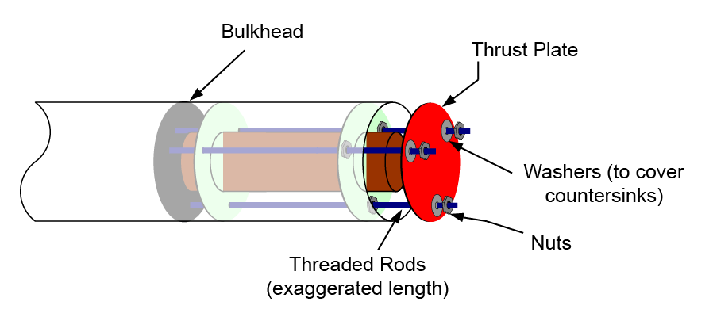
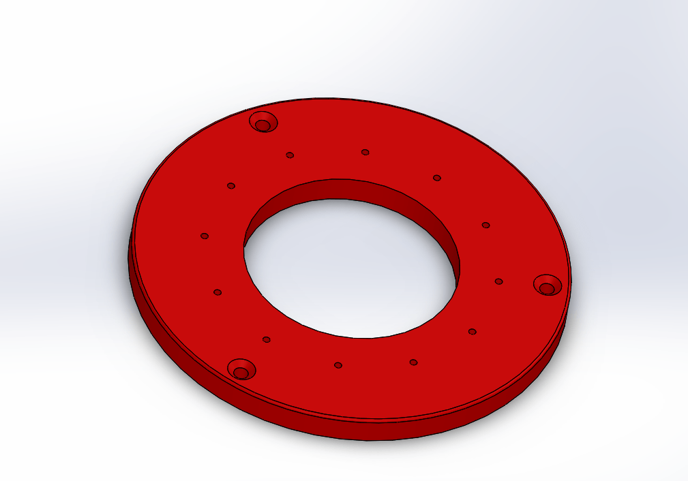
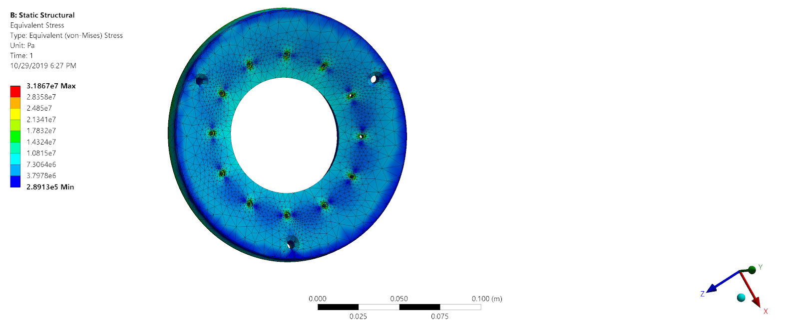

Rocket Club - Pitt University Student Launch Initiative
Problem
In 2020, the Pitt Rocket club for the NASA University Student Launch Imitative (USLI) was in its second year. I joined and entered the mechanical group. Within that, I volunteered for the simulations group with consisted of one other upper classman. Our tools consisted of flight characteristics simulators and ANSYS for static structural analysis.
Approach
My time with the team was brief, but I enjoyed getting to be a part of our group. The rocket you see was the test launch rocket we used to capture data on the flight and recovery for the competition rocket. This was launched several weeks or so before the competition.
By the time I joined, I had some experience in ANSYS from the "simulation in engineering design" course series I was doing. That was enough to join the Simulation subgroup within the Mechanical team. Structural simulation was, granted, a minor piece of the pie. I volunteered a long with some others for this group and was asked to create a small analysis.
We decided to add a thrust plate to relieve some of the load for the motor from the outer tube, but for our application, it would easily be icing on the cake.
image courtesy of Apogee Rockets.
All the same then, how would the load of a motor rocket look under load? Our rocket was probably fitted with this or a similar model.
I made this CAD model at the time. You may notice the outer screw bores are not staggered like the image on the site if you checked, and you would be correct. However, this, while a blemish on the model, is functional mute since only the inner ring would be screwed in at least for the scale of the loading supplied. If the larger holes were closer or fixed, this assumption would have to change.
The model was imported to ANSYS and given the material properties for the 6061-T6 Aluminum, and the boundary conditions were set to show as pure tension over the holes. Notice that each screw slot has a small annulus which mimics the area a screw head would occupy on launch. All other possible forces for this were neglected and thus, the plot below was created showing the greatest stress around the holes.
The result showed a maximum of 31 MPa stress, about a tenth of the yield strength. Overall, USLI was a good learning experience.